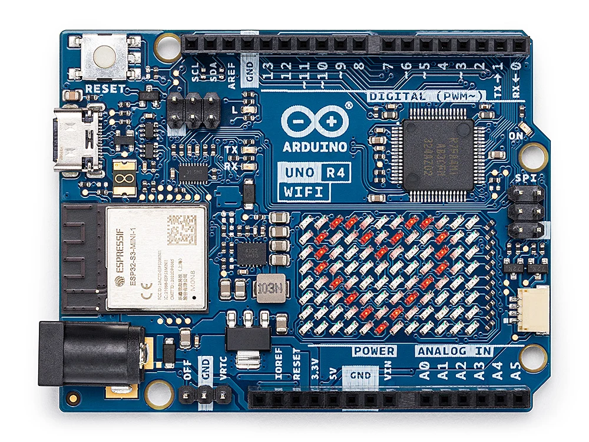

Getting Started
Explore the project
A quick tour from cloning the repository to a blinking LED on an Arduino UNO R4 WiFi.
1. Prerequisites
Juno builds with Java 27 and Maven. The easiest way to get both is SDKMAN!, which installs the
exact versions the repository pins in its .sdkmanrc:
curl -s "https://get.sdkman.io" | bash
source "$HOME/.sdkman/bin/sdkman-init.sh"
sdk install java 27.0.0.0+35-tem
sdk install maven 3.10.0
java -version # should report version 27
mvn -version # should report Apache Maven 3.10.0 running on Java 27
The Juno Maven plugin drives Arduino CLI to compile and upload sketches, so install it too, with Homebrew on macOS or the official install script elsewhere:
brew install arduino-cli
# or: curl -fsSL https://raw.githubusercontent.com/arduino/arduino-cli/master/install.sh | sh
arduino-cli version
2. Clone the project
git clone https://github.com/jabrena/juno.git
cd juno
sdk env
./mvnw clean install
sdk env switches the shell to the pinned Java and Maven versions. install builds every module and puts the Juno
Maven plugin in your local repository, so the examples can use it.
3. Look around the modules
| Module | What it holds |
|---|---|
juno-api |
The Java API your programs compile against: GPIO, timing, Serial, Wi-Fi, shields, LEGO and the @Board annotations. |
juno-compiler |
The compiler: reads .class files, links the program and emits AVR, Thumb-2 or Xtensa assembly plus a C++ runtime shim. |
juno-maven-plugin |
The Maven goals that compile, verify, upload and monitor a program. |
juno-examples |
Ready-to-run example programs, from Blink to games. |
4. Connect the board
Plug the UNO R4 WiFi into your computer with a USB-C cable.

Install the board cores and libraries the examples need, once per machine, then check that the board is detected:
./mvnw -f juno-examples/pom.xml juno:install-deps
./mvnw -f juno-examples/pom.xml juno:boards
juno:boards lists the connected boards with their port and FQBN; the UNO R4 WiFi shows as
arduino:renesas_uno:unor4wifi.
5. Read the Blink example
Blink is plain
Java: it turns the built-in LED on and off every half second.
public class Blink {
public static void main(String[] args) {
DigitalOutput led = DigitalOutput.of(ArduinoUno.getGpio().getBuiltinLed());
while (true) {
led.high();
Delay.millis(500);
led.low();
Delay.millis(500);
}
}
}
6. Compile, verify and upload Blink
Each Maven goal builds on the previous one. juno:compile turns the program into an Arduino sketch (.S assembly,
Shim.cpp and .ino) under juno-examples/target/juno:
./mvnw -f juno-examples/pom.xml compile juno:compile \
-Djuno.main=io.github.jabrena.juno.api.hardware.gpio.Blink \
-Djuno.board=arduino-uno-r4-wifi
The plugin generates a complete Arduino sketch directory:
juno-examples/target/juno/BlinkAsm/
├── BlinkAsm.ino
├── Blink.S
└── BlinkShim.cpp
juno:verify also compiles that sketch with the real Arduino toolchain, without touching the board:
./mvnw -f juno-examples/pom.xml compile juno:verify \
-Djuno.main=io.github.jabrena.juno.api.hardware.gpio.Blink \
-Djuno.board=arduino-uno-r4-wifi
juno:upload flashes it to the board, which then blinks its built-in LED:
./mvnw -f juno-examples/pom.xml compile juno:upload \
-Djuno.main=io.github.jabrena.juno.api.hardware.gpio.Blink \
-Djuno.board=arduino-uno-r4-wifi